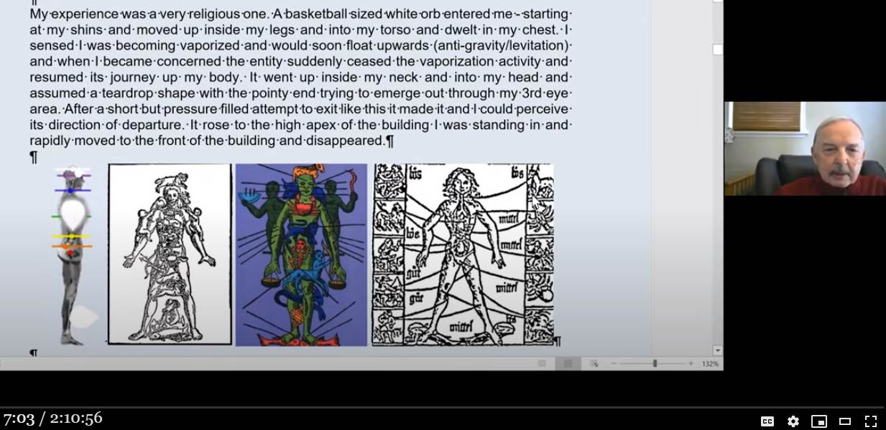

コンサート演出用大道具から高次元世界のメッセージを受け取った精神世界信者たち
履歴
(2021-06-26) 追加 (2020-06-18) 追加 (2020-06-16) 追加 (2020-05-29) 追加 (2019-09-30) 追加 (2019-09-28) 作成はじめに
・本日 up された動画（1,556 views, Sep 27, 2019）から。 ・最近開催された野外音楽集会（当日、現場上空では UFO が目撃されたとも噂されているらしい…）で撮影された映像（下）が精神世界の信者たちの間で話題になっている。この動画に登場しているゲストたち（物理学博士を含む）も、この映像を深読みしてあれこれ精神世界のヨタ話の大風呂敷を広げまくっている。 ・いつもなら精神世界のヨタ話は無視するところ。今回は特別に、下の二人が語り合っている精神世界のヨタ話を詳しく取り上げる。訳はデタラメ。登場人物
・音女（音楽に生きてきた女） ・博男（Greg 、物理学の博士号をもった男）抜粋（デタラメ）
・17:00 ・音女：高次元世界の指導的存在が、我々にむけて、この投影像――神聖な女性の象徴（Divine feminine symbol）――を用いて聖なるメッセージを送って来たのが下の写真だ。 ・人差し指に注目。スクリーンが無い筈の場所に人差し指の先が写っている。これは、こっそりと目立たないように高次元世界から目覚めつつある人々に向けて送ってきたメッセージだ。 ・博男：現代は合理性が支配的だが、それに対する非合理の顕れによる補償作用の役割を、この不思議な人差し指は担っている。私は科学者として訓練を受けてきたので、このような現象には困惑する。 ・音女：私の人生は音楽に入れ込んできたから、この手の音楽コンサートやそこで使われている技術をよく知っている。だからこの現象が技術的にありえないことを理解している。 ・博男：今、ET の精神感化が地球規模で浸透しつつある。 ・このベールをかぶった女性像は Carl Jung が述べた sacred inner wedding（内なる神聖な結婚？）を意味している。我々は合理性に行き過ぎた。だから我々の合理性は、非合理性と結婚する必要がある。 ・音女：（女性像の顔を覆っている）ベールはどんどん薄くなり、透明化する。つまり、合理性と非合理性の間を仕切るベールが薄くなるのだ。同様にこの物理世界と残りの宇宙の間のベールも薄くなる。 ・博男：ベールは黙示録も意味している。つまり啓示だ。これまで隠されていたものが、明らかになることだ。彼女のベールが取り払われることで女性の原理（＝知恵と知識）がやってくる。このような象徴的な意味を我々は体験しているのだ。 ・博男：我々は同じ夢を見ているのだ。例の Shasta 山の door （ドアに似た岩）の前に立ったことは地下世界や無意識に入り込むことを意味しているのだ。我々は無意識と意識を統合する必要があるからだ。 … … … … … ・このメッセージは…という意味だ。なぜなら右手は男を示し、左手は女を示す。そして… folk festeval動画（2:30:29）
・GRANT CAMERON Rabbit Hole meeting Sept 7コメント
・この不思議な人差し指の部分を拡大すると… ・同じ会場の同じ塔（ただし開催年月が異なる）の拡大写真が下。この塔の中にスピーカーを収めている。その塔の覆いに女性像を投影したのが今回の映像シーン。 ・この指の正体は turnbuckle （塔などを支持するワイヤーの金具）…wコメント2
・音女は、この像を 神聖な女性の象徴（Divine feminine symbol）と述べているが、それにしては顔の表情が神聖というより魔女的。不気味で怖い。 ・私がこの像で連想したのは「お一人様（女性）向けのウェディングドレス試着セレモニー」。相手の男がいない事、一人だけの婚礼衣装、怖い内面心理…が共通するゆえにw。ref: ソロ ウエディング（ひとりウェディング）～恋するドレス～｜株式会社チェルカトラベル - http://cerca-travel.co.jp/solowedding/(2019-09-30)
(以下、2020-05-29 追加分)前置
・上の博男（Greg 、物理学の博士号をもった男）が、自身の ET 遭遇体験を語っている。抜粋（デタラメ）
・1:32:30 ・ET 遭遇体験を語る。教会のミサに家族で参加。orb 的な生物が出現し両足のスネに触れた。尾が見えた。inner vision で。私の胸の中へ。蒸発して信者席から浮遊した感じ。後にこれは 微細身の発達 "subtle body development" だとわかった。orb が上昇し首を通って頭に入り込み眉間の第三の眼 third eye の所で縮小。私の第三の眼が開いたのだと思った。動画（2:08:54）
・GRANT CAMERON Rabbit hole Light Languages April 11 ・1,820 views,May 25, 2020コメント
・第3 の眼が開いても、金具が指にみえるようでは節穴と変わらないのでは？ ・こじつけが達者な博男のことだから、これは単なる金具でも偶然でもない、シンクロニシティによって金具が指の意味を担うように目立たぬかたちで巧みに事象が仕組まれた結果だ、Jung によれば（略）…とか言い張るのだろうけども。 (2020-05-29)
(以下、2020-06-16 追加分)前置
・上の博男（Greg 、物理学―流体力学―の博士号をもった男）が、自身の ET 遭遇体験をより詳しくイラストと文章を交えて告白しているので追加しておく。抜粋
・7:00 から。Greg の orb 体験。  (追記 2022-09-15 begin) - 上の画像部分の文章（MS Word の音声入力機能を使っていた？）は後日、役に立つ可能性があるのでテキスト化しておく。原文
DeepL
私の体験は、とても宗教的なものでした。 バスケットボールの大きさの白い球体が私のすねから入ってきて、足の内側から胴体に移動し、胸に宿りました。 私は、自分が蒸発し、すぐに上方に浮いてくるのを感じました（反重力/昇降）。私が心配になると、その実体は突然蒸発活動を止め、私の体への旅を再開しました。 それは私の首の内側から頭の中に入り、涙の形をし、とがった端は私の第3の目の部分から出ようとしました。 短い時間でしたが、このように出ようとする圧力に満ちた試みの後、それは成功し、私はその出発の方向を知覚することができました。 それはビルの高い頂点まで上昇した。私はそこに立っていて、急速に建物の前に移動し、消えました。原文
The building was Holy Trinity Church in San Pedro, California (I was raised Roman Catholic) and the front of the building was where the altar was located. For me the entity was the Holy Spirit. It was during Sunday morning mass in February 1976 in a packed church when I was 36 years old. The anti-gravity aspect l eventually understood to be a symbolic message that this experience is connected to subtle body development. It is about the soul (consciousness has no weight), the diamond body, the evolution of one's consciousness into a greater wholeness. After that awakening everything began to change and within 10 years my wife divorced me, our two daughters tried to commit suicide and my netfinancial worth went to zero. But eventually l recovered and am now retired. But there was a great psychic suffering that came with this experience. It is "thecost of progress" in helping one evolve their consciousness. lt was only just afew months ago was able to understand why it entered my shins. It comes from the work of Paracelsus (an early physician) who assigned parts of the body to the signs inthe zodiac. The feet are for Pisces and the shins are for Aquarius. This tells me that during the age of Aquarius a great evolution of the consciousness in humanity is being sought for. His book cover is shown in the following image.DeepL
建物はカリフォルニア州サンペドロのホーリー・トリニティ教会で（私はローマ・カトリック教徒として育った）、建物の正面が祭壇のある場所だったのです。私にとっての主体は聖霊でした。 1976年2月、36歳のときに満員の教会で行われた日曜朝のミサのときでした。 反重力的な側面は、最終的には、この体験が微妙な身体の発達と関連しているという象徴的なメッセージであると理解された。それは、魂（意識に重さはない）、ダイヤモンドボディ、より大きな全体性への意識の進化に関するものだ。 この目覚めの後、すべてが変わり始め、10年以内に妻は離婚し、二人の娘は自殺を図り、私の純資産はゼロになりました。 しかし、結局、私は回復し、今は引退しています。しかし、この経験には大きな精神的苦痛が伴いました。 それは、人が意識を進化させるための「進歩の代償」なのです。 それがなぜ私の脛に入ったのか、ほんの数ヶ月前に理解することができました。これは、パラケルスス（初期の医師）が、体の部位を星座に割り当てたことに由来している。 魚座は足、水瓶座は脛というように。これは、水瓶座の時代には、人類の意識の大きな進化が求められていることを物語っている。彼の本の表紙は次のようなものである。 (追記 2022-09-15 end)動画（2:10:56）
・GRANT CAMERON Rabbit Hole June 13 (2020-06-16)
(以下、2020-06-18 追加分)前置
・最近の過去記事、 Grant Cameron : 臨死体験者の 75%は離婚し、自殺率も高い。 - http://news21c.blog.fc2.com/blog-entry-16194.html に関連。 ・上の切り出し静止画の中の文章で Greg が興味深い告白をしているので記録しておく。抜粋（デタラメ）
・私は（orb が体を通過し、第3 の眼が開けたと感じた）覚醒体験の後に ・妻と離婚し、 ・二人の娘は自殺を試み、 ・破産して無一文 となった。 ・これらの苦難は、意識を進化させるために必要な代価だった。これらの苦難からようやく立ち直ることができ、80歳となった今は引退できた。コメント
・「これらの苦難は、意識を進化させるために必要な代価だった」という Greg の解釈は奇妙。代価を払い終えた後に、意識の進化を得た…という話ならわかるが、意識の進化を済ませ（＝ 第3 の眼が開けた――自己申告――）た後に、その代価をゆっくりと 10年もかけて家族を巻き添えにしながら分割払いをしてきたというのでは話が逆だろう。 ・要するに Greg の覚醒体験なるものは客観的に見れば、家族を巻き込んで離婚、自殺、破産を招くもの（たぶん自我の肥大か）であった。少なくとも、そういった災いの発生を回避しえないものであった。そういった災いをもたらすものを、本人だけは意識の進化だと誇っている。自分が家族にもたらした災いを意識の進化に「必要な代価」だと正当化している。精神世界にはよくある話ではあるが…。 ・とはいえ、齢 80歳の彼がこのような妄想を抱えたまま墓に入るのは、彼には好都合なのかもしれない。気休めではあるが、いまさら真実を知ったところで余計に苦しむだけだし。余命を知らされない末期がん患者が回復を少しも疑わずに残り少ない闘病人生を過ごすようなもので。 ・だが、まだ間に合う。いくら後悔することになろうと、それが間際だろうと、真実から眼を逸らさず（薄々勘付いている筈だ）、真実に直面してから死ね…これが私からのはなむけの言葉だ、Greg。 (2020-06-18)
(2021-06-26 begin)前置き
・この Greg が自分の名前（ Gregory Sova ）を公表していた。動画（2:04:02）
The UAP Intelligence Task Force Messages Reportコメント
・Gregory Sova が 2019-10-01 以前（*1）に・隠された 7次元の意味は…（略）。ポップコーンの雨が出現し、新たな学習が始まる。ポップコーンには蚊がついている。蚊は疫病をもたらす。よって、5次元世界から出現する何かが重大な悪影響をもたらす。 ref: 物理学博士の精神世界信者が南極に関する download 情報を語る。 （全体） (2019-10-01)とネット会議で語っていたが、強引に解釈すればこの「ポップコーン」はコロナ・ウィルス の事だった…とかw。全体のデコボコ具合が似ていなくもないが、まさかね。そういえば「蚊がついている」はコロナ・ウィルスのスパイク・タンパク質ref: コロナウイルスの構造と複製サイクル（ライフサイクル）｜城西国際大学 - https://www.jiu.ac.jp/features/detail/id=6822のことを意味していた…とも解釈できなくもない（蚊の針＝コロナ・ウィルスのスパイク・タンパク質）。この意味では、この予知？事例は遠隔視的なものかもしれない。遠隔視で未来の情景を見たという事例を過去記事で何度か取り上げた（*2）。 ・こういう事例があるから、一見するとくだらぬ話でも記録しておくと役立つ場合がある。 ・上のネット会議の最初の方しか聞いていないので（精神世界の与太話で溢れかえっているゆえ、聞くのは苦痛）、 Gregory Sova がこの件に言及しているかどうかは知らない。彼のことだから予知だと自慢してもおかしくはない。（*1）
・中国で最初のコロナ・ウィルス患者が発症したのは 2019-12-08 だとされている。よってその 2か月以上前の発言。（*2）
・たとえば… Russell Targ : Ingo Swann が座標データだけで、中国の核実験失敗の光景を 3日前に遠隔視 (2020-11-12) (2021-06-26 end)
初出
コンサート演出用大道具から高次元世界のメッセージを受け取った精神世界信者たち。 （途中：その6） (2021-06-26)